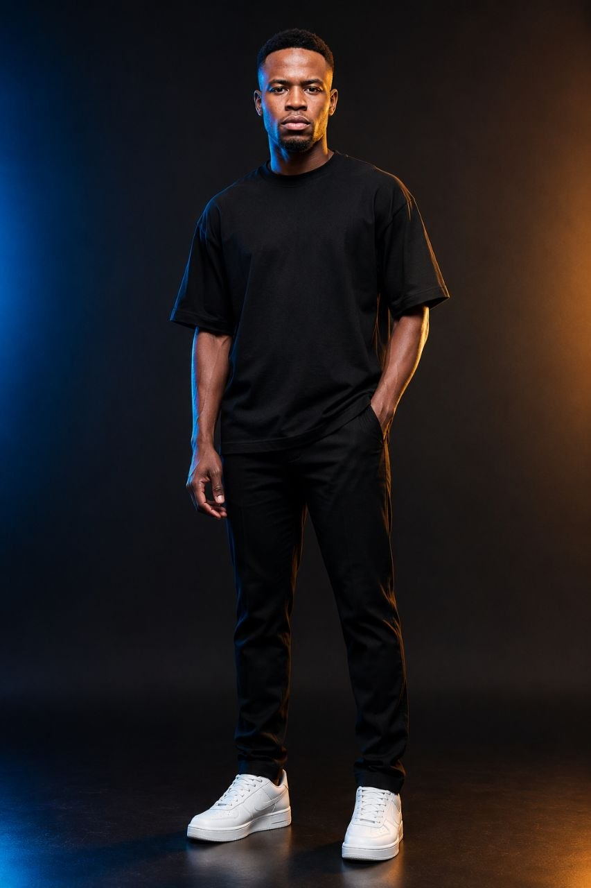

Inusah Iddrisu Adelga
IT Educationist and STEAM Advocate empowering communities through technology, education, and impact-driven innovation.
From grassroots learning to scalable digital tools, I design solutions that turn passion into opportunity.

Teaching people to turn raw data into clear decisions
I help beginners learn Python and data analysis by focusing on real-world skills like cleaning, visualizing, and communicating data.
Driven by a vision to empower underserved communities through digital skills, my journey blends passion with purpose — learning, building, and creating impactful platforms like AdelgaCode .
IT Education
Building strong digital literacy foundations for learners taking their first steps into computing.
STEAM Advocacy
Leading AdelgaCode, an initiative bringing hands-on science, tech, and design learning to underserved communities.
Data Analysis Coaching
Guiding beginners through Python, data cleaning, and visualization with a focus on real, communicable insight.
Practical, real-world data skills
I help beginners build strong foundations in Python and data analysis by focusing on practical, real-world skills. My approach emphasizes data cleaning, visualization, and effective communication, enabling learners to confidently turn raw data into meaningful insights.
Contact Me Here